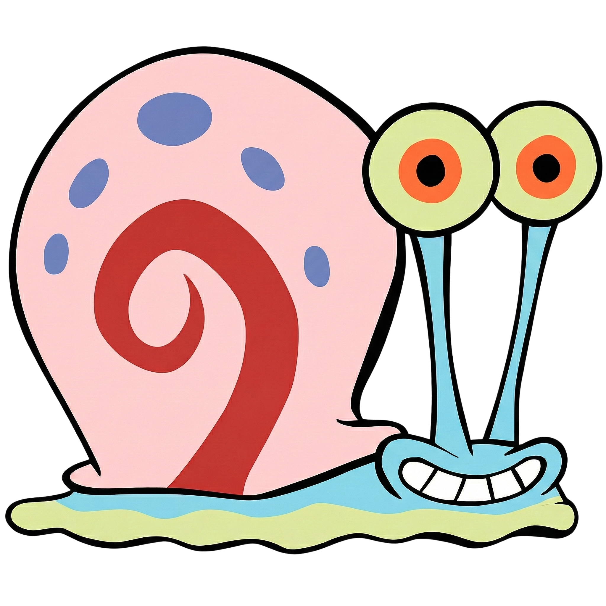
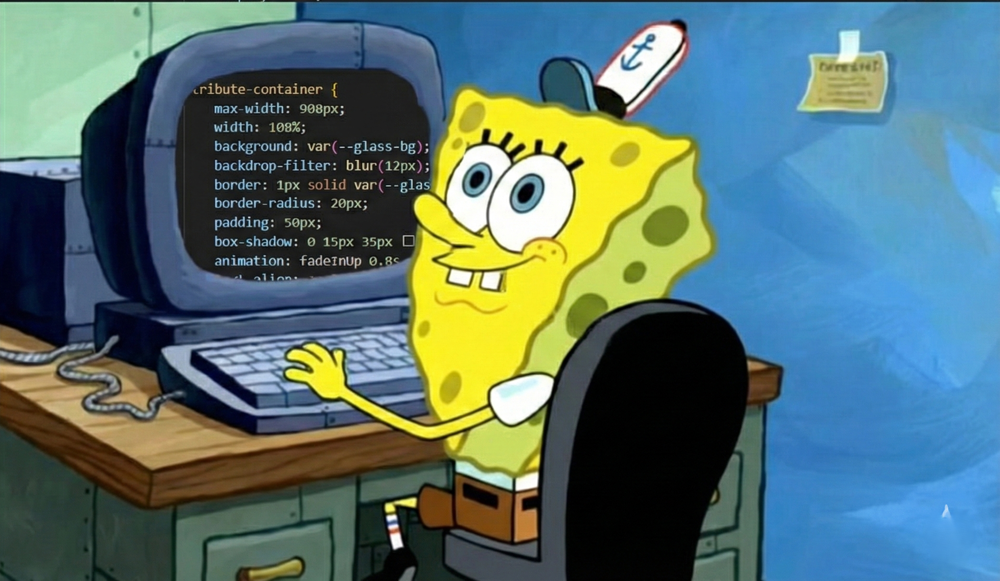

Why I Love SpongeBob
December 2011

This was the first time I ever heard about SpongeBob.
January 2015

I first discovered SpongeBob in January 2015. I immediately got attached to the character and started following his adventures.
October 2020
COVID-19 period.

December 2025
Here we are in December 2025, and I still love watching the episodes. The only difference is that now I enjoy sharing the fun with my younger siblings "And now, I'm excited to watch the new movie 'Search for SquarePants' releasing this month!"
